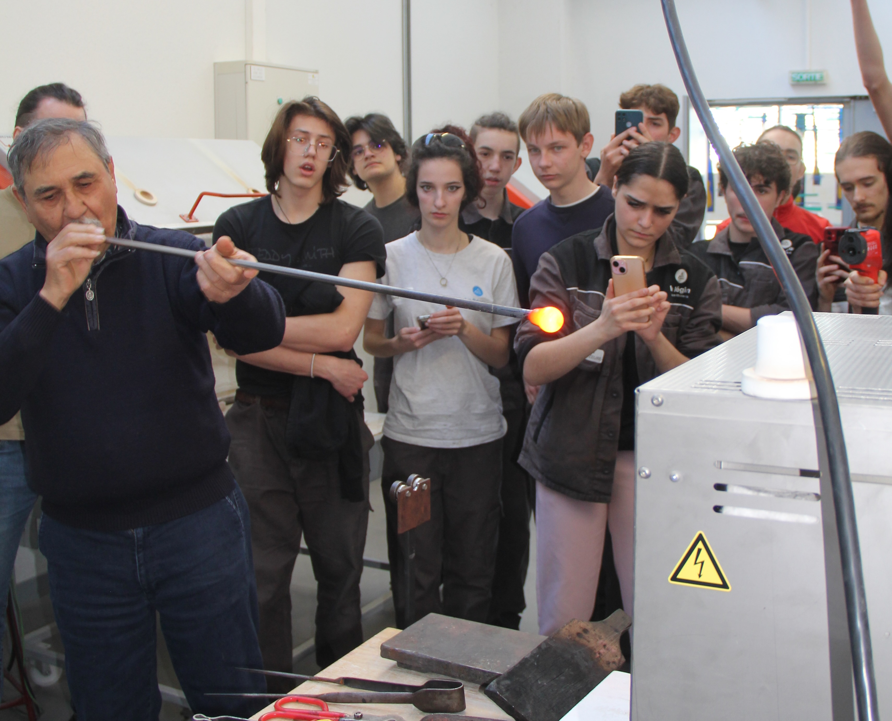

The glass of the future
The ANR project 3VER (Towards More virtuous glass) was awarded funding in 2024, strengthening the long-standing
collaboration between the Lycée Jean Monnet, academic researchers, and professional glass artists through
a shared scientific project. The 2025 Glass Days marked the first opportunity to actively involve students
in this collaborative research programme, bridging scientific investigation, experimental glassmaking,
and artistic practice.
The 2025 Glass Days explored two major themes, highlighting both the scientific and technological aspects of glass and the launch of a new collaborative research initiative:
-
The many applications of glass, from everyday objects to advanced technologies,
-
The ANR 3VER project.
Following the award of ANR funding, this edition provided an opportunity to actively involve the students
in the research project. During the 2024 Glass Days, a series of glass compositions incorporating
volcanic lavas had been prepared to identify formulations capable of producing homogeneous glasses.
These preliminary investigations were further developed in the laboratory during the winter of 2024–2025
through viscosity measurements and colour characterization by optical absorption spectroscopy.
During the 2025 Glass Days, these new glass compositions were melted in the workshops using small platinum crucibles.
The resulting glasses were then tested for their suitability for glassblowing and shaping with a blowpipe,
under the guidance of instructors and professional glass artists. Throughout the demonstrations, glass
temperatures were measured at each processing stage using a pyrometer to verify their consistency with
the viscosity–temperature relationships previously determined in the laboratory.
The experimental results were subsequently presented and discussed with the students, allowing them to
compare laboratory measurements with workshop practice and to gain a deeper understanding of the
links between glass composition, viscosity, processing conditions, and the workability of the material.
This hands-on approach enabled the students to become fully engaged in the scientific objectives of
the ANR 3VER project.

Glass artist Allain Guillot testing the formability of the new glass compositions from the 3VER project in front of the students.